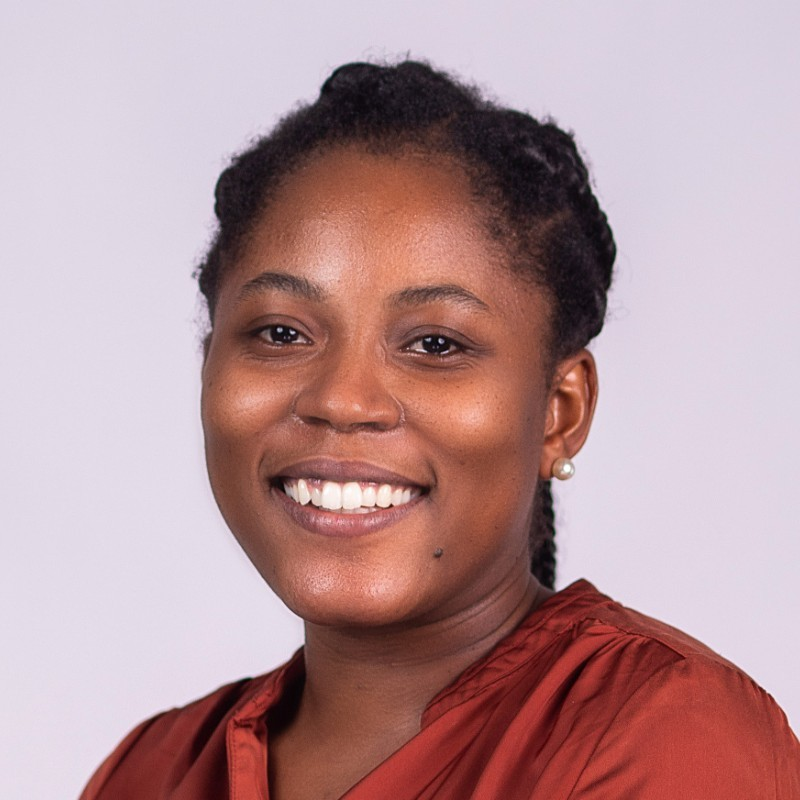

Mary Lamptey

About Me
Proficient in programming and systems analysis, a team player and self-motivated with good problem-solving and communication skills
Work Experience
01/09/2018 - 31/05/2023 | Kumasi, Ghana
Software Engineer | Kwame Nkrumah University Of Science And Technology
My job duties include:
- Software project analysis
- Software and database architectural design
- Maintaining software systems
- Evaluating and testing new software programs
- Optimizing software for speed and scalability
- Writing and testing code
- Deploying software
- Consulting with clients, engineers, security specialists, and other stakeholders
- Presenting new features to stakeholders
- Training of end users
- Rendering support to end users
- Conducting research into new software development tools and security designs
Education And Training
01/01/2022 - Current | Kumasi, Ghana
MSc Business and Data Analytics | Kwame Nkrumah University of Science And Technology
01/08/2013 - 01/06/2017 | Kumasi, Ghana
BSc Information Technology | Kwame Nkrumah University of Science and Technology
Website: https://www.knust.edu.gh/
Language Skills
Mother tongue(s): English
- Listening - C2
- Reading - C2
- Spoken Production - C2
- Spoken Interaction - C2
- Writing - C2
Digital Skills
- C#
- Restful APIs
- Microsoft SQL / Microsoft SQL Server
- .NET / .NET Core / .NET Framework
- Angular
- Azure DevOps
- Microsoft Reporting Services
- HTML5 / CSS / Javascript / Web development
- Object Oriented Programming / Solid Principles
- Entity Framework
- SSRS
- Git
Contact Details